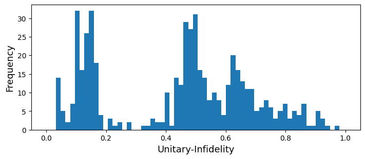
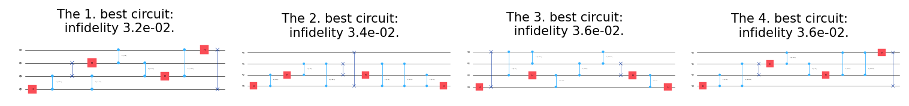
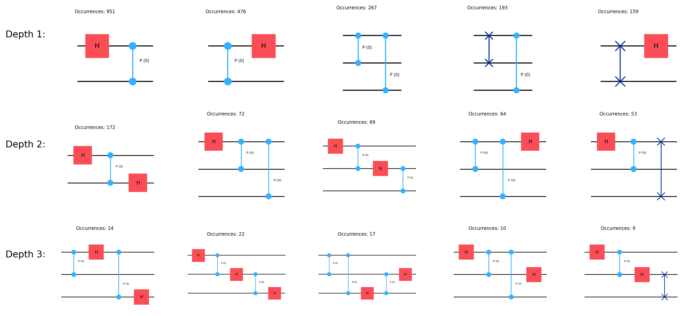

from genQC.imports import *
import genQC.utils.misc_utils as util
from genQC.dataset.config_dataset import ConfigDataset
from genQC.pipeline.multimodal_diffusion_pipeline import MultimodalDiffusionPipeline_ParametrizedCompilation
from genQC.scheduler.scheduler_dpm import DPMScheduler
from genQC.platform.tokenizer.circuits_tokenizer import CircuitTokenizer
from genQC.platform.simulation import Simulator, CircuitBackendType
from genQC.inference.sampling import decode_tensors_to_backend, generate_compilation_tensors
from genQC.inference.evaluation_helper import get_unitaries
from genQC.inference.eval_metrics import UnitaryInfidelityNorm
from genQC.benchmark.bench_compilation import SpecialUnitaries
import genQC.platform.tokenizer.tensor_tokenizer as gpeQuantum Fourier transform and gate-pair tokenization
Unitary compilation
Parameterized gates
Quantum circuits
Pretrained model
A short tutorial showing the compilation of the Quantum Fourier transform (QFT) and extracting tokens via Gate-Pair tokenization (GPE).
util.MemoryCleaner.purge_mem() # clean existing memory alloc
device = util.infer_torch_device() # use cuda if we can
device[INFO]: Cuda device has a capability of 8.6 (>= 8), allowing tf32 matmul.device(type='cuda')# We set a seed to pytorch, numpy and python.
# Note: This will also set deterministic algorithms, possibly at the cost of reduced performance!
util.set_seed(0)Load model
Load the pre-trained model directly from Hugging Face: Floki00/cirdit_multimodal_compile_3to5qubit.
pipeline = MultimodalDiffusionPipeline_ParametrizedCompilation.from_pretrained("Floki00/cirdit_multimodal_compile_3to5qubit", device)The model is trained with the gate set:
pipeline.gate_pool['h', 'cx', 'ccx', 'swap', 'rx', 'ry', 'rz', 'cp']which we need in order to define the vocabulary, allowing us to decode tokenized circuits.
vocabulary = {g:i+1 for i, g in enumerate(pipeline.gate_pool)}
tokenizer = CircuitTokenizer(vocabulary)
tokenizer.vocabulary{'h': 1, 'cx': 2, 'ccx': 3, 'swap': 4, 'rx': 5, 'ry': 6, 'rz': 7, 'cp': 8}Set inference parameters
Set diffusion model inference parameters.
pipeline.scheduler = DPMScheduler.from_scheduler(pipeline.scheduler)
pipeline.scheduler_w = DPMScheduler.from_scheduler(pipeline.scheduler_w)
timesteps = 40
pipeline.scheduler.set_timesteps(timesteps)
pipeline.scheduler_w.set_timesteps(timesteps)
pipeline.lambda_h = 1.5
pipeline.lambda_w = 0.45
pipeline.g_h = 0.4
pipeline.g_w = 0.2
# These parameters are specific to our pre-trained model.
system_size = 5
max_gates = 32For evaluation, we also need a circuit simulator backend.
simulator = Simulator(CircuitBackendType.QISKIT)Compile the QFT unitary
We now compile the 4-qubit QFT.
samples = 512
num_of_qubits = 4
prompt = f"Compile {num_of_qubits} qubits using: ['h', 'cx', 'ccx', 'swap', 'rx', 'ry', 'rz', 'cp']"
U = SpecialUnitaries.QFT(num_of_qubits).to(torch.complex64)out_tensor, params = generate_compilation_tensors(pipeline,
prompt=prompt,
U=U,
samples=samples,
system_size=system_size,
num_of_qubits=num_of_qubits,
max_gates=max_gates,
no_bar=False, # show progress bar
auto_batch_size=256, # limit batch size for less GPU memory usage
)[INFO]: (generate_comp_tensors) Generated 512 tensorsFor instance, a circuit tensor alongside parameters the model generated looks like this
print(out_tensor[0])
print(params[0])tensor([[ 0, 0, 8, 0, -2, 0, 0, 0, 4, 0, 0, 0, 0, 0, 9, 9, 9, 9, 9, 9, 9, 9, 9, 9, 9, 9, 9, 9, 9, 9, 9, 9],
[ 0, 0, 0, 4, 2, 3, 1, 8, 0, 8, 8, 0, 0, 0, 9, 9, 9, 9, 9, 9, 9, 9, 9, 9, 9, 9, 9, 9, 9, 9, 9, 9],
[ 0, 8, 8, 4, 0, -3, 0, 0, 0, 0, 8, 1, 8, 0, 9, 9, 9, 9, 9, 9, 9, 9, 9, 9, 9, 9, 9, 9, 9, 9, 9, 9],
[ 1, 8, 0, 0, 0, -3, 0, 8, 4, 8, 0, 0, 8, 1, 9, 9, 9, 9, 9, 9, 9, 9, 9, 9, 9, 9, 9, 9, 9, 9, 9, 9]], device='cuda:0')
tensor([[ 0.0000, -0.7021, -0.9835, 0.0000, 0.0000, 0.0000, 0.0000, -0.9720, 0.0000, 0.6553, 0.2625, 0.0000, -0.7555, 0.0000, 0.0000, 0.0000, 0.0000, 0.0000, 0.0000, 0.0000, 0.0000,
0.0000, 0.0000, 0.0000, 0.0000, 0.0000, 0.0000, 0.0000, 0.0000, 0.0000, 0.0000, 0.0000]], device='cuda:0')Evaluate and plot circuits
We decode these now to circuits and calculate their unitaries.
generated_qc_list, _ = decode_tensors_to_backend(simulator, tokenizer, out_tensor, params)
generated_us = get_unitaries(simulator, generated_qc_list)We then evaluate the unitary infidelity to our target U.
U_norms = UnitaryInfidelityNorm.distance(
approx_U=torch.from_numpy(np.stack(generated_us)).to(torch.complex128),
target_U=U.unsqueeze(0).to(torch.complex128),
)We get the following distribution of the infidelities.
plt.figure(figsize=(7, 3), constrained_layout=True)
plt.xlabel(UnitaryInfidelityNorm.name(), fontsize=13)
plt.ylabel("Frequency", fontsize=13)
plt.hist(U_norms, bins=60)
plt.xlim([-0.05, 1.05])
plt.show()
We plot the four best ciruits, w.r.t. the infidelity:
plot_k_best = 4
idx = np.argsort(U_norms)
fig, axs = plt.subplots(1, plot_k_best, figsize=(10, 2), constrained_layout=True, dpi=150)
for i, (idx_i, ax) in enumerate(zip(idx[:plot_k_best], axs.flatten())):
ax.clear()
generated_qc_list[idx_i].draw("mpl", plot_barriers=False, ax=ax)
ax.set_title(f"The {i+1}. best circuit: \n infidelity {U_norms[idx_i]:0.1e}.", fontsize=10)
Gate-Pair tokenization
Now we want to extract reusable substructures (gadgets) from generated circuits. We use all generated tensors in out_tensor, regardless if their circuits have good or bad infidelity.
gate_pair_tokenizer = gpe.GatePairTokenizer(unique_class_values=pipeline.embedder.unique_class_values,
zero_token=0,
padding_token=9,
device="cpu")Next, we run our proposed Gate-Pair Encoding (GPE) scheme:
_ = gate_pair_tokenizer.learn(out_tensor.cpu(), max_depth=5, max_iters=100)New depth reached 1
New depth reached 2
New depth reached 3
break: max_iters reachedNow we plot the extracted tokens.
max_depth = 4
topk = 5unpacked_vocab_configs_depths, unpacked_vocab_configs_cnts_depths = \
gpe.get_topk_depth_unpacked(gate_pair_tokenizer, num_of_qubits, use_raw=True)max_depth = min(max_depth, max(unpacked_vocab_configs_depths.keys()))
fig, axs = plt.subplots(max_depth, topk, figsize=(12, 6), dpi=200)
for ax in axs.flatten():
ax.clear()
ax.set_axis_off()
for (depth, unpacked_vocab_configs), (unpacked_vocab_configs_cnts), axs_sel in \
zip(unpacked_vocab_configs_depths.items(), unpacked_vocab_configs_cnts_depths.values(), axs):
if depth > max_depth:
break
for i, (ax, unpacked_vocab_config, unpacked_vocab_config_cnt) in \
enumerate(zip(axs_sel, unpacked_vocab_configs, unpacked_vocab_configs_cnts)):
zero_ps = torch.zeros((1, unpacked_vocab_config.shape[-1])) - 1
instr = tokenizer.decode(unpacked_vocab_config, zero_ps)
qc = simulator.genqc_to_backend(instr, place_barriers=False)
#------
ax.clear()
qc.draw("mpl",
plot_barriers=False,
ax=ax,
idle_wires=False)
for text in ax.texts:
if 'q' in text.get_text():
text.set_visible(False)
text.remove()
ax.patch.set_facecolor('none')
ax.patches[0].set_color("none")
ax.set_title(f"Occurrences: {unpacked_vocab_config_cnt.item()}", fontsize=6)
if i==0:
plt.figtext(-0.03, 1-(depth-0.7)/max_depth, f"Depth {depth}:", horizontalalignment='left', verticalalignment='top', fontsize=12)
plt.tight_layout()
plt.show()
As we only extract discrete tokens, the parameters of the continuous gates are set to 0 for plotting.
import genQC
print("genQC Version", genQC.__version__)genQC Version 0.2.0